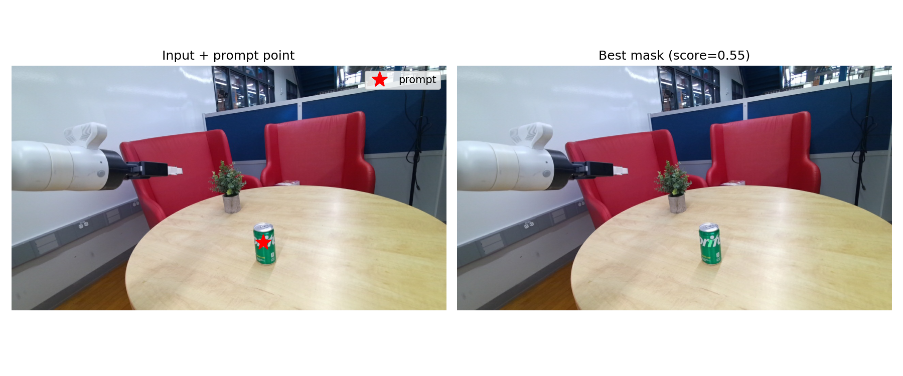
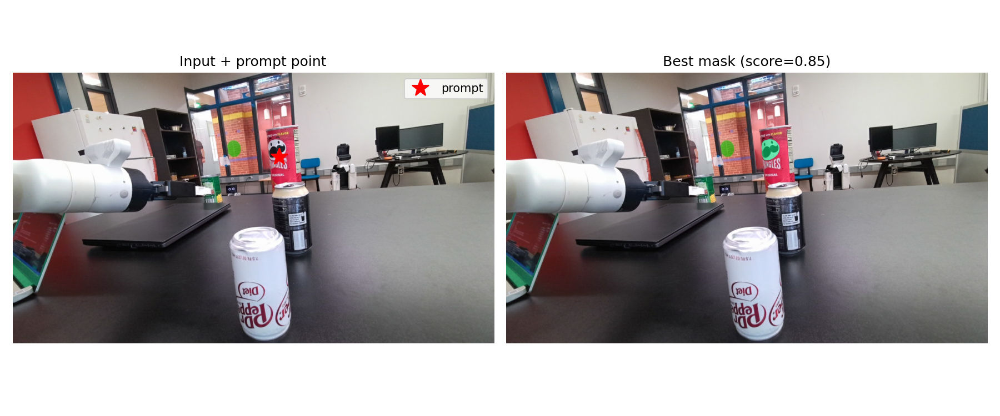

← All projects
Robotics · ECLAIR
Cobot.
A collaborative robotics project featuring object perception and manipulation.

Collaborative robotics · Robot arm · Object perception · Manipulation
The project
Cobot is a collaborative robotics project. These examples show a robot-arm camera view with a prompted object and the corresponding segmentation mask.
Project media
The images compare segmentation results from large, medium, and tiny models. Each shows the input prompt and the selected mask with its score.

